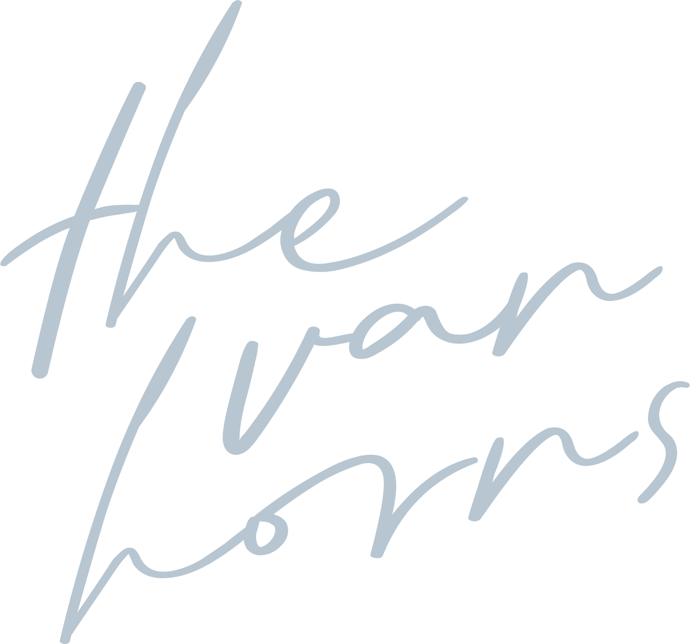

Your OKC Guide Awaits
Register to receive your complimentary guide to Oklahoma City — neighborhoods, favorites, and everything you need for your move.
Register for Access
Register to receive your complimentary guide to Oklahoma City — neighborhoods, favorites, and everything you need for your move.
Register for Access.png)

Presented by:
Claire Van Horn
Keller Williams Realty Elite
.png)
We are Van Horn Homes, a husband & wife real estate team with Keller Williams Realty Elite here in OKC.
We are excited that you will call our city home and hope this guide can put you on the fast track to learning & loving Oklahoma City!
We have curated the top districts, restaurants, bars, coffee shops, and activities...at least in our opinion. Never hesitate to reach out if you need a recommendation or professional contact in the city.
From our hearts to yours – we look forward to serving you!


Claire graduated from the University of Oklahoma with a major in Advertising and a minor in Enterprise studies. While working in the Advertising industry she learned valuable marketing skills that she uses to catch the eyes and ears of home buyers. She is people-oriented, design-minded, and your biggest cheerleader during the home buying/selling process. She also will go sing karaoke with you any night of the week!
Caleb graduated from the University of Oklahoma with a degree in Finance. He spent several years in Real Estate Finance and Asset Management. Having had his home inspection license, he is very well versed in what goes into having a safe and sturdy home. Caleb is detail-oriented, hyper-competitive, a fan of systems+operations, and an even bigger sports fan. BOOMER SOONER + THUNDER UP!
To truly understand this city we call home, we recommend spending some time at the Oklahoma City Memorial & Museum. What took place on April 19, 1995, in downtown OKC changed our city and our nation forever. But it is how our city responded that took the world by surprise. The "Oklahoma Standard" was born out of the overwhelming community response in the hours, days, and months following the tragedy. It lives on today in many of us as we dedicate our lives to those that were lost through acts of service, honor, and kindness. Whether touring the museum or taking in the glow and serenity of the Field of Empty chairs at night, the OKC Memorial is a must-see for any OKCitian.
There is no better example of the renaissance Oklahoma City experienced following the bombing than our beloved OKC Thunder! So many greats have come through our city in the decade they've called OKC home, and the best is still to come. We recommend taking in a game and seeing what Loud City is all about! Pro-tip: There is nothing quite like the NBA playoffs in OKC (we may just have to wait a few years to experience it.)


If you don't like the weather in Oklahoma, wait a minute and it'll change.Will Rogers


Oklahoma City is still one of the most affordable places to buy a home. Easy to navigate and with little traffic, you can't go wrong choosing which part of town is right for you. Some of the most popular neighborhoods in the Urban Core:
Lincoln Terrace – Close proximity to OU Medicine
Mesta Park – Centrally located with lots of charm
The Paseo – Bungalows galore with easy access to shops and food
Shepherd District – Classic architecture and affordable prices
Oklahoma City has seen an explosion of new apartment complexes and townhomes. Finding the perfect blend of affordability and lifestyle has never been easier downtown. Some of our top recommendations:
SOSA & Midtown
The Bower – Boutique luxury in the heart of SOSA with neighborhood charm
The Edge at Midtown – Rooftop pool, dog park, and skyline views on Walker Ave
LIFT – Mixed-use living on 10th St with ground-floor shops and dining
Deep Deuce & Bricktown
Level Urban Apartments – The anchor of the Deep Deuce revival
The First Residences – Luxury living in a restored 1931 Art Deco skyscraper
Steelyard at Bricktown – Modern finishes with a resort-style pool
Film Row
West Village – The district’s mixed-use anchor with rooftop pool and retail below
Mosaic – Contemporary living steps from Jones Assembly and Bar Arbolada

Architecturally significant and beaming with history, Heritage Hills has maintained a strong sense of community as the neighborhood continues to evolve. The homes are some of our favorite places within city limits.
Mesta Park provides a charming historic community with all the modern amenities. A community that puts its residents first while preserving the past and improving the future is what makes Mesta Park so desirable.
A quiet, entirely residential neighborhood with no through traffic — a rare urban retreat with tree-lined streets and a strong sense of community.
Winding streets and lush tree canopy create a park-like setting in the heart of the Urban Core — one of OKC's most unique residential enclaves.
Crown Heights is a great place to call home. With its charming architecture and close proximity to Western Ave, it offers something for everyone.
The historic charm and oversized lots of this neighborhood are matched only by its proximity to some amazing amenities in Oklahoma City. With easy access to all the city has to offer, you'll never have trouble getting around town when living at Putnam Heights.
Quickly becoming one of the most desirable addresses in Midtown, SOSA is where modern architecture meets neighborhood charm. The streets here are lined with some of Oklahoma City’s most striking new homes — a perfect blend of urban energy and residential calm.
The beating heart of OKC’s social scene. Whether it’s dinner at a buzzworthy new restaurant, drinks on a rooftop, or a Saturday morning stroll through the shops, Midtown keeps you in the middle of it all — and there’s no shortage of places to call home within walking distance.
Once the epicenter of Oklahoma City’s jazz and blues scene, Deep Deuce has reinvented itself as one of downtown’s most vibrant residential communities. Great restaurants, lively nightlife, and an unbeatable location steps from everything downtown has to offer. Just up the hill, The Hill at Bricktown offers townhomes for those looking to own a piece of the neighborhood.
OKC’s premier entertainment district — more than 45 restaurants, bars, and shops line the historic brick streets and canal. From comedy shows and baseball games to concerts and outdoor dining along the water, Bricktown brings an energy unlike anywhere else in the city.
The creative soul of downtown. Tucked along West Main Street, Film Row is home to some of OKC’s best cocktail bars, acclaimed restaurants, and local breweries. More intimate and artsy than its neighbors, it’s the kind of place where you’ll discover your new favorite spot.
Lincoln Terrace is a historic preservation district in nearby many downtown OKC attractions. It offers great views of the skyline and Oklahoma State Capital, with its picturesque brick architecture.
Oklahoma City's original art district has never been more popular. With plenty of activities for everyone, from local art galleries to festivals with great food or live music a short walk away.
Classen Ten Penn is a vibrant neighborhood that has undergone many changes in recent years. With easy access to the heart of downtown OKC and the Plaza District across the street from you, this area provides its residents lots of excitement.
Wheeler features everything from spectacular views of the downtown skyline (including its iconic Ferris wheel), to bike trails along the Oklahoma River and restaurants and shopping steps from your door. Plus the new West Gate Elementary is connected to the neighborhood.
Gatewood blends historic charm and modern new builds. Home to an eclectic mix of people who love the convenience of the Plaza and all 23rd St. has to offer. You will be hard-pressed to find a more convenient location in the Urban Core.
Crestwood is a picturesque neighborhood in the heart of Oklahoma City, with quick access to all that downtown has to offer. Enjoy a home full of character and charm.
Linwood Place boasts a thriving community plus many historic homes. The styles range from colonial revival, to craftsman, through tudor revival, all of which are being thoughtfully renovated and restored.

Cleveland is a friendly, diverse neighborhood in the heart of OKC's urban core. This area offers homes with many different styles and great schools for kids!
Shepherd is a small neighborhood with an old-world charm. The streets are lined by manicured lawns and many tudor style homes that have been remodeled.
Venice is the perfect place to call home if you're looking for a friendly community, great location, and unique blend of home styles on the winding boulevard.
Are you looking for an easy commute and plenty of entertainment options in the Urban Core? This neighborhood borders Western Avenue, so its residents have access not only to major highways but also to many popular dining destinations as well.
Whether you're looking for a quick meal or some retail therapy, the residents of Belle Isle have easy access to all that OKC has to offer. Plus, seamless commuting options from this central location in the North Urban Core!
A friendly community with tree-lined streets and quick access to restaurants, coffee shops, and parks. Glenbrook offers a welcoming neighborhood feel in the heart of North OKC.

Nichols Hills is a luxury neighborhood located North of the Urban Core and Western Ave District. Its upscale environment and beautiful homes plus the manicured streets and parks have made it one of the most sought-after places in Oklahoma City.
The Village is a great place to live if you're looking for the perfect mix of city life and affordability. With its many restaurants, coffee shops, and parks it's quickly become a sought-after area in the Northern part of the city.
One of the most desired neighborhoods of NW OKC, Quail Creek has become a wonderfully established neighborhood with homes ranging from Mid-Century Modern, Traditional, Cottage, Contemporary and everything in between. The HOA organizes numerous social events throughout the year like 4th of July Parade and neighborhood Trick-or-Treating.

Oklahoma, where the wind comes sweepin' down the plainRogers & Hammerstein

Some of OKC's most fashionable shops and best restaurants are in the Classen Curve shopping area along Western Avenue between Northwest Grand Boulevard and Classen Boulevard.
If curated treasure hunting is more your style, visit one of Western Ave's many antique stores, like Antique Avenue or Guestroom Records, which sells new and old vinyl albums.

23rd Street is the perfect blend of American dive bars and great food. From date night to brunch, a quick bite, or a night out, 23rd Street has something for every occasion! We love visiting Pony Boy for a drink followed by Tower Theatre for a show!
Spirit of the Old West


We'll keep this one brief, but the stockyards are a glimpse into OKC's history. Horses, cowboys, and of course cattle. If you are in the market for authentic western wear, look no further. Plus Cattleman's Steakhouse has been an Oklahoma City icon since it opened in 1910.
Funky Little Arts District

One of the most popular districts in OKC, the plaza has an eclectic blend of shopping and restaurants. Hosting art shows and festivals, there is always something happening. Check out the ever-changing Plaza Walls and some Roxy's Ice Cream! Make sure to stop by Mexican Radio for Happy Hour!
Arts District

The Paseo is home to over 20 galleries and more than 80 vibrant artists all within walking distance of each other on the curved, two-block street that has maintained its Spanish revival architecture with its original stucco buildings and clay roof tiles. Intermixed with the galleries are restaurants, art schools, boutiques, and other businesses. Goro Ramen is a must!
Labor Omnia Vincit
Labor Conquers All
Oklahoma State Motto

Packed with restaurants, shopping, and bars, Midtown is one of the most popular districts in OKC. Walking distance from several apartments and neighborhoods, it's a great place to grab a bite or happy hour. Pick a song on the Jukebox in the back room at R&J Lounge!

While many out-of-towners think of downtown OKC as just 'Bricktown', there is so much more to see/do in the heart of the city! Be a part of the hustle and bustle while getting a feel for what makes Oklahoma City great! If this is your first time to OKC, we recommend that you check out the bombing memorial. It tells the story of one of the most historic and painful events in our city and remembers the victims and first responders. The memorial is full of rich history, heart, and passion for the City. It reminds us that we are people who deeply care for one another.


Enjoy getting on the water in a kayak, take a bike ride on the 13+ miles of trails, enjoy RiverSport Adventures, or check out whitewater rafting and tubing in RiverSport Rapids. You'll also find Surf OKC & Ski OKC! With so much to do, you will definitely want to make a weekend out of this district. Bar K, a dog friendly bar also hosts many fun gatherings along the river!

In the 1930s, Sheridan Avenue was the destination for theater owners looking to screen and lease films for their movie houses. Dubbed "Film Row," it was home to notable film companies like Paramount Pictures, MGM, Universal, Fox and Warner Brothers. It has since seen new life with popular restaurants and nightlife. One of our personal favorites is a little wine bar called "The Study" with 64 bottles of wine on tap! Great for a small get-together with friends or date night.

Oklahoma City's foodie scene is alive and well in the Asian District, where an influx of Vietnamese immigrants in the 1970s created a hub now known for its Asian fusion cuisine. Here you will find some of the best Asian restaurants in OKC!

Well, I never been to heaven but I been to Oklahoma.Hoyt Axton


Home to some of the most outstanding tourist attractions in Oklahoma, experience all that the Adventure District has to offer. Make memories with your family at one of our many museums or take an exciting journey through science!
Historic Jazz District


The Deep Deuce is a historical neighborhood in Oklahoma City that has been home to many Black cultural contributions and become an important hub for blues musicians throughout much of 20th century. Now a vibrant residential community with restaurants, bars, and walking distance to all of Downtown.

Bricktown is a thriving urban area that has more than 45 restaurants, bars, and retail shops along with family-friendly attractions. The diversity here makes it one of OKC's most distinct historic districts where you can find everything from art galleries, comedy shows, baseball games, concerts, or there's always the outdoor beach (that actually opens during summer) right nearby too. If you're into golf, check out The Joinery Golf Simulator Bar!


The Automobile Alley district is a fascinating mix of history and modern flare. Along Broadway Avenue, you'll find some of Oklahoma City's best restaurants and shops with neon signs from the old days hanging around to remind us how it all began here in this cool little spot on our downtown map! Be sure to check out Factory Obscura just off of 9th St. for a one-of-a-kind immersive experience.
.jpg)

As a historic downtown airpark, the modern development offers residents varied housing options in a walkable and bikeable community. You can explore the shops, public parks with views of the city skyline as well other unique locations throughout! Wheeler is also home to the historic Santa Monica Pier Ferris Wheel. Overlooking the downtown skyline, the Wheeler Ferris Wheel stands 100 feet above the South bank of the Oklahoma River.

Sitting on over 6 acres with the main building boasting 15,000 sq. ft, this pocket of OKC has seen new life in recent years, hosting events, weddings, & more. Check out the Saturday farmers market weekly from 9:00-2:00 or grab a drink at one of the several watering holes!

If you are looking for the perfect place to hang with your pup, look no further! OKC is becoming increasingly more dog friendly with new places opening with great patios! Bar K is one of our personal favorite places to take our dog. You can also head north to Red Solo Pup to enjoy a drink while your dog gets to play!
And yes, we are the proud parents of Henry (our son) and Rory (our Bernedoodle)!
*Better for Date Night
If you cannot tell, we LOVE living in Oklahoma City! Whether you are brand new to OKC or coming back to the area, we hope this guide helps you fall in love with the city + the people + the food + the culture.
If you are needing recommendations on anything (hairdressers, doctors, babysitters), do not hesitate to reach out! We would love to share with you our personal favorites.
Follow us on social for more updates on OKC events/activities. We are so glad that you have chosen to call Oklahoma City "Home".
.png)